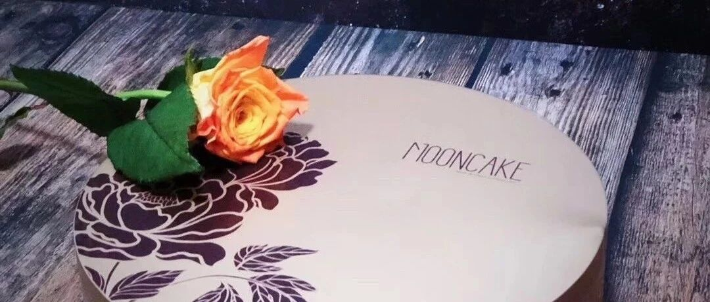

跟着书本做烘焙之十 - “花好月圆”大月饼

题图来自 早就寄给她 到现在还没吃
很淡定表示周末一早就吃的
大英雄杨斯文
感谢她的美图图和美花花！
这个系列介绍过许多我很喜欢的作者和博主，以及书。我又重新看了一遍这些方子，真的都好经典，值得翻做很多遍。
跟着书本学烘焙系列：
诚恳建议：请在歌声中，先把全文通读一遍。
今天这一位也是我很喜欢的博主，微博名叫“Tinrry甜悦”。她以视频教学为主，所以时间都稍微有点长，但是胜在教的很细，成功率就高。唯一就是声音太嗲，嗲的就是要稍微忍忍，人是很甜的。
看到这个方子纯属偶然，而且这么多年，我不喜欢做广式的月饼，从来没有做过。最近看微博确实看的多，主要是被这个模具吸引了，实在是一个太太太好看的模具了，不做实在对不起自己啊！誓为颜值折腰！

此图片来自“Tinrry家”淘宝店铺
如果有时间可以去看看Tinrry的视频，我前前后后看了差不多有6789遍吧，在做的时候，我们这些手残星人，还是会有一些小问题，下面给大家一点点提醒。没时间的话，就按照我下面的说法来做，一步步做也不会差到哪里去。
提前需要准备的东西：
大模具（600g的，6寸大）
6寸蛋糕脱模纸 （一包够了）
广式糖浆 (250ml 可以做三个大月饼)
枧水 （60ml 够了）
中筋小麦粉 （500g 可以做三个大月饼 10个小的广式的）
咸蛋黄（这个不要买市场上鲜的，真空包装 2包）
雪媚娘皮（这是个网红馅儿，一个大月饼用两张，我买了两包）
香芋馅儿（一个月饼需要200g，一包500g，自己算哈）
羊毛刷（小的）
因为考虑送人，也买了配套的密封袋、盒子和纸袋（2套）。
一直想买个封口机，就趁机买了，便宜好使。
还有一个出镜很少，但是也很有用的小喷壶（以前买的，主要是定型用）。
都可以在Tinrry的淘宝店买到，店铺名字叫 “Tinrry家”，随便大家去哪里买。我重点说一下馅儿，有广州酒家和莲香楼的，我同时还买了白莲蓉，豆沙，奶黄，五仁。买的莲香楼的香芋馅儿，觉得略有点硬，延展性就一般，也可能是这个馅儿本身的特性决定的。五仁买的广州酒家的，实力证明，五仁只能自己做，外面买的都不行。好在这两个厂家，馅儿都不甜，还有低糖版，可能大家都开始崇尚健康了吧。
为了方便大家匡算成本，以上这些采办，共计343.50元。
三个大月饼的直接成本82.90元，2个盒子+袋子50.08元。
其他都是多的原料和相关费用。
（嗯，我现在是预算季，人设就这样 【两手一摊】）
材料：
饼皮
广式糖浆 75g
枧水 3g
花生油 20g
中筋粉 105g
馅料
咸蛋黄 100g （8-9个）
肉松 10g（没有就不加）
黄油 10g
雪媚娘皮 2张
香芋馅儿 200g
其他
一张6寸脱模纸
三张保鲜袋剪开摊平的保鲜膜
步骤：
饼皮
称好糖浆，加入枧水。注意枧水重量千万不能多，一多上色就很深，不好看。
用手动打蛋器搅打均匀，加入花生油，然后继续搅打均匀，能看出来乳化的状态不一样了。
加入中筋粉，用刮刀轻柔翻拌均匀，防止起筋。
后期可以带上手套，帮助成团。放在旁边，醒两小时。
我一般就去睡一觉，然后起来做馅儿。


馅料
第1层
称好咸蛋黄，铺锡纸，放入烤盘，180度，7分钟。注意：稍微有一点流油就可以了，不要烤过了。
不需要放凉，直接放入搅拌机，搅打均匀。加入肉松，继续搅打均匀。这时候蛋黄是松散的，肉松是基本看不到的。
注意：
a）如果是市场的鲜的咸蛋黄，会比较软，搅打就会糊在一起。所以买市售真空的就行。
b）如果没有搅拌机，趁热用勺子压也可以的，我觉得差别不大，但是咸蛋黄中间的芯儿，就会有点硬，实在按不散，就前面多称一点，直接自己吃了就行了。
从搅拌机中倒出，加入黄油。黄油的量非常关键，千万不要多了。黄油的状态也是关键，一定要室温软化。
用刮刀慢慢翻拌成团。差不多了就可以带着手套下手了。团成一个团子。
把6寸的脱模纸垫在保鲜袋下面，把蛋黄团子放在纸的中间，压成一个饼，盖上保鲜袋，擀成6寸大的圆饼。


第2层
将雪媚娘皮拿出来，上面很多糯米面，用刷子扫干净，扫干净了才能更好的将一层层馅料之间融合在一起。
将咸蛋黄圆饼上面铺一层皮，下面铺一层皮，要菱形交叉（如图），然后捏紧。
放置5分钟，就会看到皮和蛋黄圆饼有互相融合。


第3层
香芋馅儿称好，因为这种非自制的馅儿都会有点硬，所以先用手使劲揉好，会越揉越软的。
分成两份。先擀成一个比6寸圆纸稍微大一圈（1cm）的圆。然后将雪媚娘皮馅儿放在中间，将保鲜袋四周提起，一点点把香芋圆，贴到雪媚娘馅儿上。
另一份就不需要这么大，翻过来一样贴住即可。
周围粘合好。
注意：
a）香芋馅儿会相对有点硬，所以边上粘合会有些困难，一方面记得要把馅儿尽量软化，可以方便粘合，另一方面，如果实在粘合不上，豆沙馅儿是很软的，做个补丁也是可以的。（别问我怎么知道的）
b） 一定要粘合的没有缝隙才可以。不要存在侥幸心理，不然雪媚娘皮受热会爆皮的。


第4层
拿出醒好的外皮，一样分成两份。
这时候，外皮非常光滑，但是会有点粘手，建议带手套。
擀成比6寸大一圈（2cm）的皮，一样的操作，用保险袋一点点粘到香芋馅儿上。会有点薄，而且非常非常粘，一下就粘上了。
另一份直接覆盖，然后周边黏紧，没有缝隙即可。


入模
撒手粉（中筋粉），多一点没有关系。
两面还有侧面都要撒，摸匀。
将模具调至最底层（最大容量），将月饼放入（可以看看那面更光滑，其实都差不多，不光滑的话，隔着保鲜袋擀一下就可以了）。
稍微用力按压下去。面面俱到一点。（这是你能不能在朋友圈疯狂集赞的关键之关键！！！）
将模具稍微调上来一点，稍微高出模具表面一点点，垫着保鲜袋，用擀面杖来回擀一下。
烤盘垫油纸，反扣在模具上。翻面，变成模具反扣在烤盘上，然后脱模。


此图片来自“Tinrry家”淘宝店铺

烤制
将月饼表面的面粉用毛刷轻轻扫掉。喷一点点水雾。
预热170度，5分钟。拿出来刷蛋黄水（一个蛋黄+10g水，就一点点一点点就可以了）。然后再烤15分钟。出炉。
注意：
a）水雾要平行于烤盘，喷两下，让水雾自然落在月饼上，定型足够了。不然花纹就平了。
b）蛋黄水真的只要刷一点点，要注意花纹的地方，不要有蛋黄水填充，不然花纹会糊掉。一失手刷多了也不要紧，用厨房用纸，折出来一个小角，一点点吸收掉，就可以了。
c）烤的时候不要上色太严重，其实里面馅料都是熟的，只是把皮烤熟就可以了。放两天，回油以后颜色还会更加湿润，也会再深一点。（再次提醒：一开始的枧水不要放过量，3g是上限，不然你会收获一个“包大人”月饼）
可以发朋友圈嘚瑟咯哇。。。。
放凉以后，室温密封放置1-2天回油。然后可以在5-7天内食用。天气太热，回油以后，冰箱冷藏也可。
这就是今年的网红馅儿，香芋麻薯咸蛋黄大月饼啦！


水星婆婆 携 回油两天的大月饼
祝大家花好月圆！